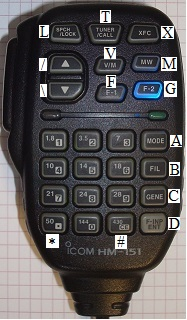
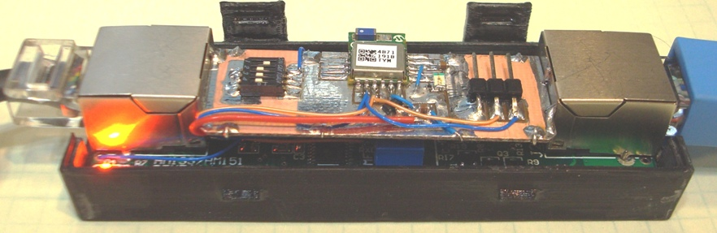
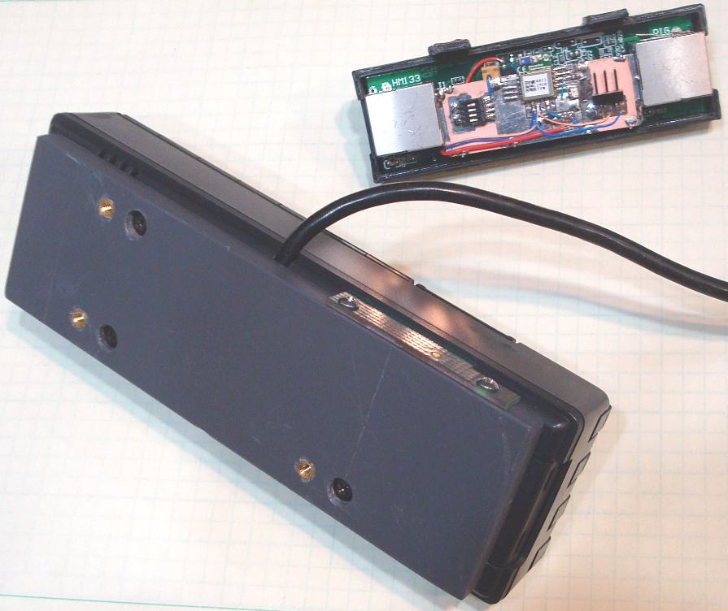

The software took a pit of prodding to get moving. First, the C8051F530 has only 256 bytes of RAM. Not a lot, but sufficient for simple tasks. The addition of the serial
interactions with the bluetooth host caused some overflow due to the linker not knowing where to put RAM items. I spent most of my time here trying to learn things about linkers
that most SW people learn in their intro courses (and then never talk about, because I can't seem to find anyone who can speak cogently about segments and linker allocation
techniques). I was able to mostly get a handle on the process, and found that the project would push the memory requirements to the limit of the processor's available RAM.
In addition, I created a conflict with Timer1 that had to be resolved. I was using Timer1 to process the DDS tone ISR, but Timer1 also drives the baud clock for the UART. So,
I could either run the DDS at 115,200 Hz (or a slower rate), and recalculate all of the DDS frequency dependent items, OR move the DDS to another timer. The latter seemed the
easier task, so I moved the DDS to Timer2, and adjusted the application timer code by wrapping it in a prescale loop to return the timers to (nearly) their original 1ms rate.
Once these tasks had been wrestled to the ground, all that remained was to create a state machine to handle the bluetooth connection and command processing tasks and then
implement calls to that process to signal when a button press action was called for. I also had to re-arrange some existing functionality to gain access to some of the
microphone buttons. This led me to the following "button map" for the HM-151:

HM-151 button map
| L: Scan up |
T: CALL |
X: Main/Sub swap |
| /: "UP" button |
V: V/M |
M: H/L power |
| \: "DN" button |
F: SET config |
G: SUB band |
| 1 |
2 |
3 |
A (MODE) |
| 4 |
5 |
6 |
B (TSQ) |
| 7 |
8 |
9 |
C (Band switch) |
| * |
0 |
# |
D (SMUTE) |
To maximize functionality, the numeric buttons and "*" and "#" were previously "multiplexed" by PTT. In other words, these buttons functioned
differently depending on the state of the PTT switch. This M.O. was carried further to allow more buttons to be available to control the IC-901A.
I also consolodated the LED brightness control, which now toggles with the "*" button. "#" toggles the CHECK button on the 901 (any button will
cancel the CHECK activation). "A" thru "D" are now used to control 901 functions (as shown above). If the PTT is active, the lower 16 buttons
generate the corresponding DTMF tone (MW still generates the 1KHz test tone if PTT is active).
The button loop takes a button address, sends it to the remote BT module via serial commands, and then sends serial commands to toggle the "pulse"
signal to facilitate the remote "press". This scheme takes an extra serial command, but accomplishes the button selection with no possibility for a logic "race condition"
that might result in a phantom button press.
There can be no project without feature creep, at least not in my house. For this project, the creep came in the form of the "Mute on RX" feature (or
"Unmute on TX", if you are a glass half full kind of person). This feature meets a need that I've been considering for some time. The
problem happens when I'm trying to operate full duplex on a local repeater system. The nature of this full duplex link is such that I will
most likely hear a link frequency (on another band) that is very strong when I am transmitting. However, when others are transmitting, the link
I hear will either be weak, or have delay in the audio. Sometimes, more often that one might think, I even hear activity from a distant, and
unrelated, system.
The talk-back capability allows me to gauge my signal quality into the system and is otherwise of no use when I am in RX. It adds nothing and can be quite
distracting. Since the microcontroller is directly in the path of the microphone PTT, it can use that information to do something useful. In
this case, at each PTT transition, the processor pulses the SMUTE (sub-mute) button. This action toggles the sub-mute feature. All I have to
do is manually establish the SMUTE state while receiving. After that, the sub-band will be un-muted when I transmit, and muted when I receive.
For the moment, this feature is enabled by a micro-DIP swich on the HM-133 adapter. The switch is difficult to operate while driving, but is my
best solution at the moment. Reversing the sense of SMUTE to support "Mute on TX" (just a button press by the operator) has some appeal as well for
those times when I am not duplex and don't want to get blasted by the sub-band while I'm transmitting. If I decide I want to enable/disable the
feature on the fly, I'll have to come up with some manner of unique key sequence (more importantly, some way to signal that the feature has been
turned on or off). For now, the DIP switch is the best I can manage.
Other variations are possible as well. One other possibility is to program the talk-back frequency in a call channel (as it currently is) and then toggle
the sub-band CALL button at each PTT transition. This requires two extra button presses, however, so I have not raced to this solution just yet.
Still, the serial messages are pretty fast, and this would allow me to monitor another repeater while I am not transmitting. Allowing one to
take full advantage of a "dual-band" radio.
Terminis...
The HM-151 was used in place of the HM-133 because the audio level of my HM-151 more closely matches that of my IC-901. Efforts at finding a mic
element for my HM-133s that is consistent with the HM-151/IC-901 have stalled, so the HM-151 is the MIC of choice around here at the moment.
Some of the subtleties of the HM-133 differences might make it a better choice, primary being that the HM-133 has a "Function" button which would
add a button press to some commands, but would by default offer up a number of additional functions that could be coded (volume and squelch would
be nice and all that is needed is a bit of software and some MIC buttons...).
There was no lack of hair-pulling on this project, but I was able to surmount the impediments and push towards a successful conclusion. A quick
project to gain an interesting augment to my trusty FM radio stack. Now, on to the next project...
Photos

Close-up of the modified HM-133 Adapter

The modified control head and HM-133 Adapter
| |